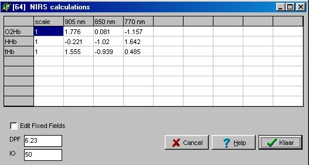

RF 2, Onset Systolische Bloeddruk
|
Met deze functie kunnen de ruwe meetsignalen van de NIRS worden omgerekend in chromphore waarden.
De ruwe NIRS data kan worden geïmporteerd met... en eventueel worden gemerged met andere midac data via ...
Er kunnen maximaal 8 ingangssignalen ( OD [ lambda] ) worden verwerkt to maximaal 8 uitgangssignalen ( Out[i] ), volgens onderstaande formule (voor uitgereidere informatie, zie de NIRS handleiding):
Out [i] = scale * som ( a [ lambda , i ] * OD [lambda] ) / ( IO * DPF )Alle factoren kunnen op de gebruikelijke wijze worden ingesteld via de functie instellingen.

De namen van de kolommen en rijen kunnen worden gewijzigd na het aanvinken van de checkbox "Edit Fixed Fields". In verband met afrondings-beperkingen, is het beter om IO=0.05 in te stellen.
Op het moment dat de rekenfunctie voor het eerst wordt aangemaakt, worden er default parameter waarden opgehaald uit het bestand funk64.ini (in de programma directory). Dit bestand kan naar eigen inzicht worden gewijzigd met een kale ASCII-editor.
[algemeen]
name=funk64.ini
n_lambda=3
n_chromophore=3
io=50
dpf=6.23
[lambda]
lambda1=905 nm
lambda2=850 nm
lambda3=770 nm
[chromo1]
name=O2Hb
scale=1.0
lambda1=1.776
lambda2=0.081
lambda3=-1.157
[chromo2]
name=HHb
scale=1.0
lambda1=-0.221
lambda2=-1.02
lambda3=1.642
[chromo3]
name=tHb
scale=1.0
lambda1=1.555
lambda2=-0.939
lambda3=0.485
© Instrumentele Dienst. Bijgewerkt op 20-04-2001.